MinGW (Minimalist GNU for Windows), formerly mingw32, is a free and open source software development environment for creating Microsoft Windows applications.
Installing the 64-bit compiler
Installing the 32-bit compiler
Download the installer for MinGW from here:
https://sourceforge.net/projects/mingw-w64/files/latest/download
The instructions on this page refer to version 7.1.0, build revision 1 of the MinGW tools. This is an older version than what we are currently using. As of September, 2019, the version that we are using is 8.1.0, build revision 0. So, if you see any screenshots below that refer to the older version, just substitute the newer version and everything should work fine.
Installing the 64-bit Version
Once you've downloaded the installer, follow the steps below to install and configure the tools.
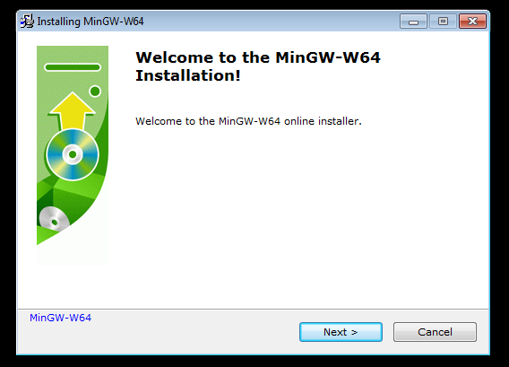
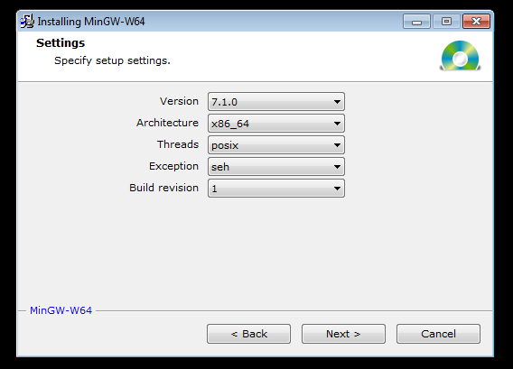
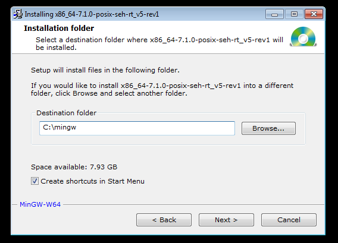
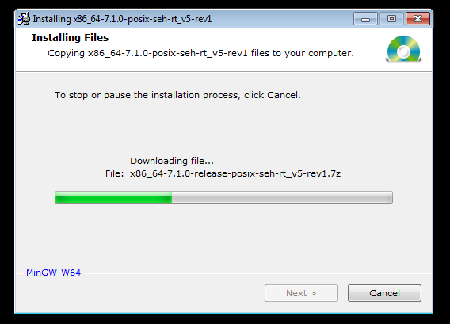
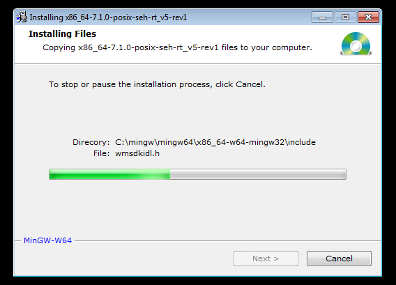
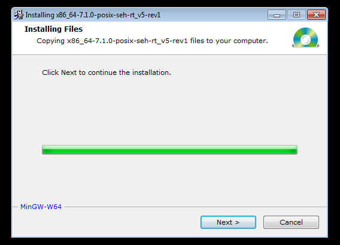
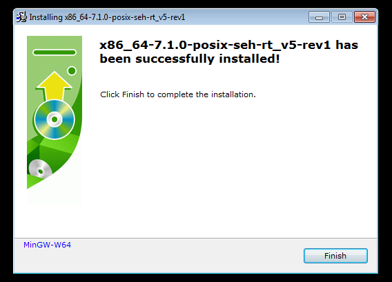Done. Almost.
If you want to be able to use the gcc/g++ compilers from any command prompt (which you most definitely do!), you'll need to add the location of the bin folder to the path. Assuming that you have installed MinGW in c:\mingw as instructed above, you need to add:
to the beginning of your PATH. If you don't know how to modify the PATH in Windows, you can find out how here , or ask a student that is familiar with Windows.c:\mingw\mingw64\bin
When adding c:\mingw\mingw64\bin to your PATH, it MUST be the first entry in the PATH. Putting it somewhere else may cause the wrong compilers to be used (probably the compilers from the Cygwin utilities). Once you've modified your PATH, you should logout and log back in to Windows.
When you log back in, open a command prompt. You should now be able to type gcc or g++ from any command window and get the later version of the compilers.
To verify that you have correctly installed and configured your computer, open a command prompt and type this:
You should see this displayed:gcc --version
gcc (x86_64-posix-seh-rev1, Built by MinGW-W64 project) 7.1.0 Copyright (C) 2017 Free Software Foundation, Inc. This is free software; see the source for copying conditions. There is NO warranty; not even for MERCHANTABILITY or FITNESS FOR A PARTICULAR PURPOSE.
Also, if you have already installed and configured the Cygwin utilities, if you type this at the prompt:You should see this:which gcc
/cygdrive/c/mingw/mingw64/bin/gcc
If you see this instead:'which' is not recognized as an internal or external command, operable program or batch file.
it means that you have not installed the Cygwin utilities, or haven't set the PATH for Cygwin correctly.Note:
For students that are less experienced working with computers (e.g. installing developer software, configuring the PATH, working from the command prompt, etc.) you may need to visit the Academic Support Center for more help. The students working there can help you ensure that your computer is configured properly. Or, you can just ask a student that is more familiar with Windows.
Installing the 32-bit Version
You will use the same installer that you used to install the 64-bit version. However, you will choose the 32-bit version instead of the 64-bit version.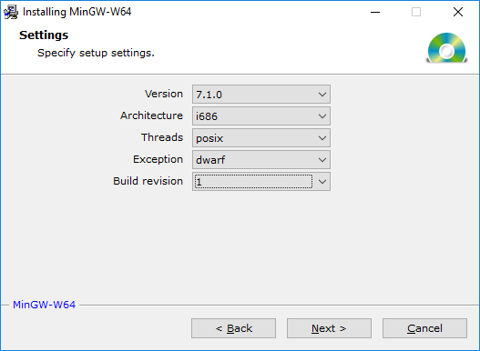
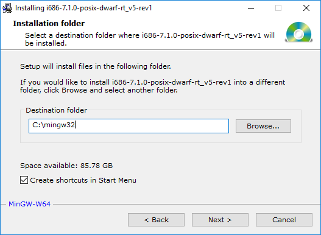
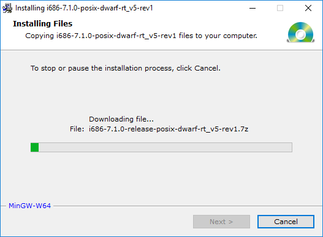
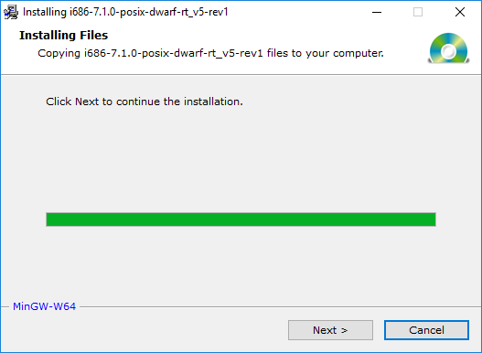
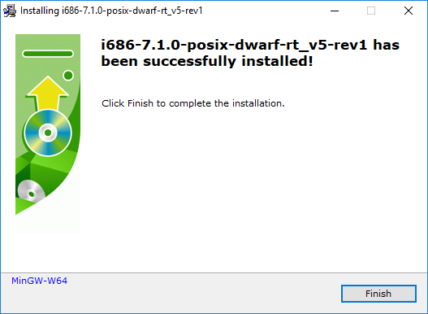Done. Again, almost.
The rest of this guide assumes that you installed the compiler to c:\mingw32 during the installation.
Currently, when you type g++ from the command line, you will run the 64-bit version of the MinGW g++ compiler. You want to continue to do that. To run the 32-bit version, you will need to create a batch file called g++32.bat and put it in your PATH somewhere. (You should have created a C:\utils directory on your computer to put your add-on programs. This directory should be the first directory in your PATH.) The contents of the batch file should look like this:
:::::::::::::::::::::::::::::::::::::::::::::::::::::::::::::::::::::::: : This batch file only handles 20 options for the compiler. This should : be sufficient. You can figure out how to add more, if necessary. :::::::::::::::::::::::::::::::::::::::::::::::::::::::::::::::::::::::: @echo off set /a count=1 :BEGIN if "%1"=="" goto END set arg%count%=%1 shift set /a count=%count%+1 goto BEGIN :END c:\mingw32\mingw32\bin\g++.exe %arg1% %arg2% %arg3% %arg4% %arg5% %arg6% %arg7% %arg8% ^ %arg9% %arg10% %arg11% %arg12% %arg13% %arg14% %arg15% %arg16% ^ %arg17% %arg18% %arg19% %arg20% set arg1= set arg2= set arg3= set arg4= set arg5= set arg6= set arg7= set arg8= set arg9= set arg10= set arg11= set arg12= set arg13= set arg14= set arg15= set arg16= set arg17= set arg18= set arg19= set arg20=
You can create the batch file with any text editor (e.g. notepad++) or, you can download the batch file here: g++32.bat (recommended). You need to download this file, not click on it and run it (the default in some versions of Windows). There is also a batch file for gcc here: gcc32.bat. Use this to compile 32-bit C programs.
Once you've downloaded the batch to (or created it in) some directory in your PATH, you can check that it's correct by typing this from any directory:
g++32 --version
If everything was setup properly, you should see this message in the console:
Now, when building 32-bit programs, you type g++32 instead of g++. For example, to build a 64-bit program (assume all of the usual command line options)g++.exe (i686-posix-dwarf-rev1, Built by MinGW-W64 project) 7.1.0 Copyright (C) 2017 Free Software Foundation, Inc. This is free software; see the source for copying conditions. There is NO warranty; not even for MERCHANTABILITY or FITNESS FOR A PARTICULAR PURPOSE.
To build a 32-bit program:g++ file1.cpp file2.cpp file3.cpp -o prog64.exe
g++32 file1.cpp file2.cpp file3.cpp -o prog32.exe
IMPORTANT NOTE #1:
IMPORTANT NOTE #2:When running the executable program, if you get an error saying something like:
"The program can't start because <some_dll_file>" is missing from your computer..."
or
"The application was unable to start correctly (0xc000007b)..."
then you will need to put the bin directory of the 32-bit MinGW compiler at the end of your PATH. If you installed it to the location recommended in these notes, that directory is C:\mingw32\mingw32\bin. The name of the missing DLL file may be something like libwinpthread-1.dll, or libgcc_s_dw2-1.dll, or some other file.
Note: If you put the bin directory somewhere other than the end of your PATH, it may interfere with your 64-bit compiler causing it to no longer work.
This is also trivial to override the compiler in your makefile. If your makefile has a macro like this (which all of your makefiles should have)When running the executable program, if you get an error message that looks like this:
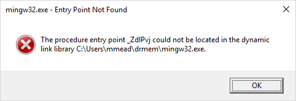
Then you need to statically link the executable. Add this option (in bold) to the command line:
g++32 file1.cpp file2.cpp file3.cpp -o prog32.exe -static
This will make the executable much bigger, but it should avoid the error.
You can simply run make like this:CC=g++
and it will build a 32-bit executable instead of a 64-bit executable. Note that you must provide the .bat file extension for the makefile.make CC=g++32.bat
To verify that your program is really a 32-bit executable, use the file command (part of the Cygwin utilities). For example, this command:
will display this in the console:file prog32.exe prog64.exe
PE32 is a 32-bit (Intel 80386) executable.prog32.exe: PE32 executable (console) Intel 80386, for MS Windows prog64.exe: PE32+ executable (console) x86-64, for MS Windows
Note to Linux and Mac users: Building a 32-bit program under Mac or Linux is trivial. You simply add a -m32 option to the command line. For example:
That's it!g++ -Wall -Wextra -ansi -pedantic -m32 foo.c
Incidentally, to create a 64-bit executable, you can use -m64, but since this is the default, you don't have to provide it to the compiler. If you run the file command on Linux, you would see something like this (with possibly more information displayed)
And on macOS you would see this:prog32: ELF 32-bit LSB executable, Intel 80386, version 1 (SYSV) prog64: ELF 64-bit LSB executable, x86-64, version 1 (SYSV)
prog32: Mach-O executable i386 prog64: Mach-O 64-bit executable x86_64